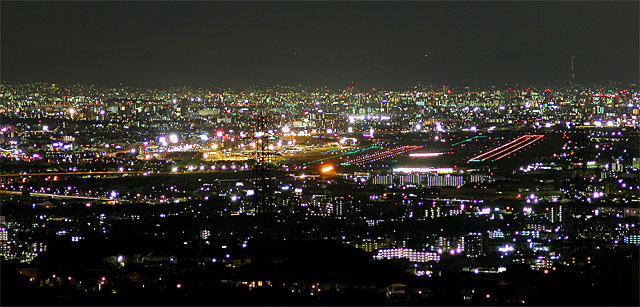

光害とは、簡単に言うと街の光によって生み出される公害である。
この公害は様々な生き物に影響を与える。
それは以下のようなものがある。

大阪の都市の光。
こうした街中では星はほとんど見られない。→
光害は知名度が低いため、対策がほとんどとられていない。
しかし、本当は世界中で悪影響を及ぼす恐ろしい害の一つなのである。
参考資料
高校時代に自分作成した論文
（文字化け防止のため,Adobe Readerで読んでください。
firefoxを使っている方は申し訳ありませんが,ダウンロードして閲覧してください。）
光害論文